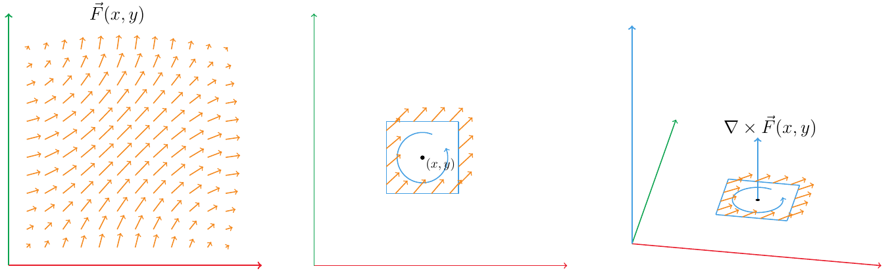
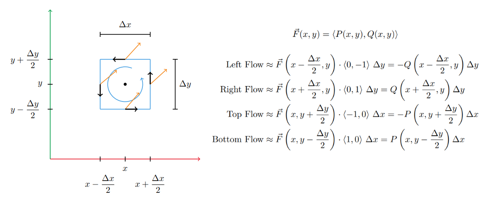
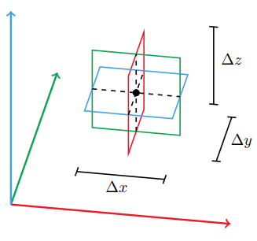
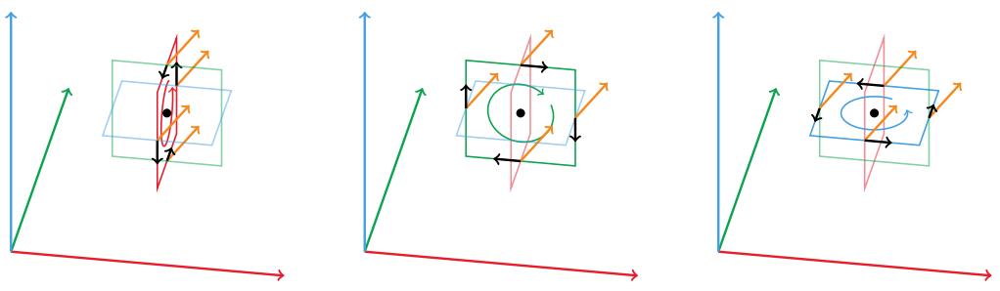
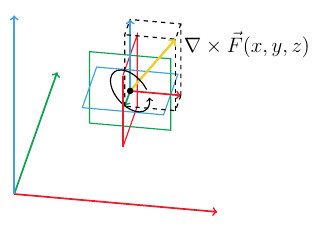

Table of Contents
Multivariable Calculus

NARROW DISPLAY WARNING
You are most likely using a tablet or mobile device in portrait orientation. This website is best viewed using a typical computer screen with the browser window maximized.
Viewing this website in portrait orientation can cause problems with equations being longer than the screen width (you can scroll to the right), images being poorly sized, and the font size of maths text being much smaller than regular text. If your only option is a tablet or mobile device, your viewing experience will be better if you view this website in landscape orientation. You might need to refresh the page to fix any problems after rotating.
An intuitive description of the curl in vector calculus is a vector operator that quantifies how much a vector field is rotating about a point and the direction of rotation. For a vector field in the $xy$-plane, the curl is often interpreted as a scalar function of $x$ and $y$ or as a vector pointing in the $z$ direction. For a vector field in three-dimensional space, the curl is a three dimensional vector. The direction of rotation at point in the vector field follows the right hand rule with the curl vector at that point. If the curl at a point in a vector field is zero, then there is zero rotation at that point.
For a vector field $\vec{F}(x,y)$,
\begin{equation} \vec{F}(x,y) = \langle P(x,y),Q(x,y) \rangle \end{equation}The $\text{curl}(\vec{F})$ interpreted as a scalar is,
\begin{equation} \text{curl}(\vec{F}) = \nabla \times \vec{F} = \frac{\partial Q}{\partial x} - \frac{\partial P}{\partial y} \end{equation}The $\text{curl}(\vec{F})$ interpreted as a vector in the $z$ direction is,
\begin{equation} \text{curl}(\vec{F}) = \nabla \times \vec{F} = \left\langle 0, 0, \frac{\partial Q}{\partial x} - \frac{\partial P}{\partial y} \right\rangle \end{equation}For a vector field $\vec{F}(x,y,z)$,
\begin{equation} \vec{F}(x,y,z) = \langle P(x,y,z),Q(x,y,z),R(x,y,z) \rangle \end{equation}The $\text{curl}(\vec{F})$ is a vector valued function,
\begin{equation} \text{curl}(\vec{F}) = \nabla \times \vec{F} = \left\langle \frac{\partial R}{\partial y} - \frac{\partial Q}{\partial z}, \frac{\partial P}{\partial z} - \frac{\partial R}{\partial x}, \frac{\partial Q}{\partial x} - \frac{\partial P}{\partial y} \right\rangle \end{equation}An easier way to remember the formula for the $\text{curl}(\vec{F})$ is,
\begin{equation} \text{curl}(\vec{F}) = \nabla \times \vec{F} = \text{det}\begin{bmatrix} \vec{i} & \vec{j} & \vec{k} \\ \dfrac{\partial }{\partial x} & \dfrac{\partial }{\partial y} & \dfrac{\partial }{\partial z} \\ P & Q & R \end{bmatrix} \end{equation}This is the cross product of the $\nabla$ vector and $\vec{F}$.
\begin{equation} \nabla \times \vec{F} = \Bigg\langle \frac{\partial }{\partial x},\frac{\partial }{\partial y},\frac{\partial }{\partial z} \Bigg\rangle \times \langle P(x,y,z),Q(x,y,z),R(x,y,z) \rangle \end{equation}The curl at a point in a vector field $\vec{F}(x,y)$ is sort of the rotation rate of the vector field arrows at that point, with anticlockwise rotation considered positive curl, clockwise rotation as negative curl, and zero rotation as zero curl. The curl in 2D can be thought of as a vector in the $z$ direction, where the length of the vector is how much rotation there is with the vector direction following the right hand rule for anticlockwise rotation in the positive $z$ direction and clockwise rotation in the negative $z$ direction. An intuitive limit approximation can show where the formula comes from.
If you want to find the curl at a point $(x,y)$ in a vector field, it's approximately the flow of arrows going around a small box in the anticlockwise direction around the point $(x,y)$. Here the box has width $\Delta x$ and height $\Delta y$. Since this is an approximation, we'll just use the vector field evaluated at the midpoint of each side. To calculate how much the arrow is pointing in the same direction as a side, take the dot product of the midpoint vector field arrow and unit vector $\vec{n}$ in the direction of rotation on that side times the length of that side.
The total rotation is the sum of the flow on all sides.
\begin{align} \text{Total Rotation } &= \left[Q\left(x+\frac{\Delta x}{2},y\right) - Q\left(x-\frac{\Delta x}{2},y\right)\right] \Delta y \\ &- \left[P\left(x,y+\frac{\Delta y}{2}\right) - P\left(x,y-\frac{\Delta y}{2}\right)\right]\Delta x \end{align}There's still one piece missing though. In the limit as the box shrinks around the point $(x,y)$, the $\text{Total Rotation}$ goes to zero because the side length go to zero.
\begin{equation} \lim_{\Delta x, \Delta y \rightarrow 0} \text{Total Rotation } = 0 \end{equation}So instead, the $\text{Total Rotation}$ will be averaged over the area of the box, which is $\Delta x \Delta y$.
\begin{align} \nabla \times \vec{F}(x,y) &= \lim_{\Delta x, \Delta y \rightarrow 0} \frac{\text{Total Rotation}}{\Delta x \Delta y} \\ &= \lim_{\Delta x \rightarrow 0} \frac{Q\left(x+\frac{\Delta x}{2},y\right) - Q\left(x-\frac{\Delta x}{2},y\right)}{\Delta x} \\ &- \lim_{\Delta y \rightarrow 0} \frac{P\left(x,y+\frac{\Delta y}{2}\right) - P\left(x,y-\frac{\Delta y}{2}\right)}{\Delta y} \end{align}This isn't usually the way they are written, but these are the partial derivatives of $Q$ and $P$ with respect to $x$ and $y$.
\begin{align} \frac{\partial Q}{\partial x} &= \lim_{\Delta x \rightarrow 0} \frac{Q\left(x+\frac{\Delta x}{2},y\right) - Q\left(x-\frac{\Delta x}{2},y\right)}{\Delta x} \\ \frac{\partial P}{\partial y} &= \lim_{\Delta y \rightarrow 0} \frac{P\left(x,y+\frac{\Delta y}{2}\right) - P\left(x,y-\frac{\Delta y}{2}\right)}{\Delta y} \end{align}It's usually written as $Q(x + \Delta x,y) - Q(x,y)$ and $P(x,y + \Delta y) - P(x,y)$, but they still have a difference of $\Delta x$ and $\Delta y$ in their input arguments.
So then the anticlockwise rotation around the box averaged over the area of the box in the limit as the box shrinks to a point is,
\begin{equation} \nabla \times \vec{F}(x,y) = \lim_{\Delta x, \Delta y \rightarrow 0} \frac{\text{Total Rotation}}{\Delta x \Delta y} = \frac{\partial Q}{\partial x} - \frac{\partial P}{\partial y} \end{equation}The idea for curl of a vector field in 3D is similar to 2D. In 2D, the rotation axis has to be the $z$-axis, but in 3D, the rotation axis can point in any direction. Since the axis of rotation could point in any direction, the rotation around the $x$, $y$, and $z$ axes has to be calculated using three squares perpendicular to each axis. These three squares will have lengths and widths $\Delta x$, $\Delta y$, or $\Delta z$ depending on what axis the square is perpendicular to.
A vector can be made where the $x$, $y$, and $z$ components are the vector field's rotation around the $x$-axis, $y$-axis, and $z$-axis. The rotation around each square is done the same way as for 2D. This vector will point in the direction of rotation at that point in the vector field.
 \begin{equation} \vec{F}(x,y,z) = \langle P(x,y,z),Q(x,y,z)R(x,y,z)\rangle \end{equation}The anticlockwise rotation around the $x$-axis is,
\begin{align} \text{Front Flow} &\approx \vec{F}\left(x,y-\frac{\Delta y}{2},z\right) \cdot \langle 0,0,-1 \rangle ~\Delta z = -R\left(x,y-\frac{\Delta y}{2},z\right) \Delta z \\ \text{Back Flow} &\approx \vec{F}\left(x,y+\frac{\Delta y}{2},z\right) \cdot \langle 0,0,1 \rangle ~\Delta z = R\left(x,y+\frac{\Delta y}{2},z\right) \Delta z \\ \text{Top Flow} &\approx \vec{F}\left(x,y,z+\frac{\Delta z}{2}\right) \cdot \langle 0,-1,0 \rangle ~\Delta y = -Q\left(x,y,z+\frac{\Delta z}{2}\right) \Delta y \\ \text{Bottom Flow} &\approx \vec{F}\left(x,y,z-\frac{\Delta z}{2}\right) \cdot \langle 0,1,0 \rangle ~\Delta y = Q\left(x,y,z-\frac{\Delta z}{2}\right) \Delta y \end{align} \begin{align} \lim_{\Delta x, \Delta y, \Delta z \rightarrow 0} \frac{x \text{-axis Rotation}}{\Delta y \Delta z} &= \lim_{\Delta y \rightarrow 0} \frac{R\left(x,y+\frac{\Delta y}{2},z\right) - R\left(x,y-\frac{\Delta y}{2},z\right)}{\Delta y} \\ &- \lim_{\Delta z \rightarrow 0} \frac{Q\left(x,y,z+\frac{\Delta x}{2}\right) - Q\left(x,y,z-\frac{\Delta z}{2}\right)}{\Delta z} \\ &= \frac{\partial R}{\partial y} - \frac{\partial Q}{\partial z} \end{align}The anticlockwise rotation around the $y$-axis is,
\begin{align} \text{Left Flow} &\approx \vec{F}\left(x-\frac{\Delta x}{2},y,z\right) \cdot \langle 0,0,1 \rangle ~\Delta z = R\left(x-\frac{\Delta x}{2},y,z\right) \Delta z \\ \text{Right Flow} &\approx \vec{F}\left(x+\frac{\Delta x}{2},y,z\right) \cdot \langle 0,0,-1 \rangle ~\Delta z = -R\left(x+\frac{\Delta x}{2},y,z\right) \Delta z \\ \text{Top Flow} &\approx \vec{F}\left(x,y,z+\frac{\Delta z}{2}\right) \cdot \langle 1,0,0 \rangle ~\Delta x = P\left(x,y,z+\frac{\Delta z}{2}\right) \Delta x \\ \text{Bottom Flow} &\approx \vec{F}\left(x,y,z-\frac{\Delta z}{2}\right) \cdot \langle -1,0,0 \rangle ~\Delta x = -P\left(x,y,z-\frac{\Delta z}{2}\right) \Delta x \end{align} \begin{align} \lim_{\Delta x, \Delta y, \Delta z \rightarrow 0} \frac{y \text{-axis Rotation}}{\Delta x \Delta z} &= \lim_{\Delta z \rightarrow 0} \frac{P\left(x,y,z+\frac{\Delta z}{2}\right) - P\left(x,y,z-\frac{\Delta z}{2}\right)}{\Delta z} \\ &- \lim_{\Delta x \rightarrow 0} \frac{R\left(x+\frac{\Delta x}{2},y,z\right) - R\left(x-\frac{\Delta x}{2},y,z\right)}{\Delta x} \\ &= \frac{\partial P}{\partial z} - \frac{\partial R}{\partial x} \end{align}The anticlockwise rotation around the $z$-axis is,
\begin{align} \text{Left Flow} &\approx \vec{F}\left(x-\frac{\Delta x}{2},y,z\right) \cdot \langle 0,-1,0 \rangle ~\Delta y = -Q\left(x-\frac{\Delta x}{2},y,z\right) \Delta y \\ \text{Right Flow} &\approx \vec{F}\left(x+\frac{\Delta x}{2},y,z\right) \cdot \langle 0,1,0 \rangle ~\Delta y = Q\left(x+\frac{\Delta x}{2},y,z\right) \Delta y \\ \text{Front Flow} &\approx \vec{F}\left(x,y-\frac{\Delta y}{2},z\right) \cdot \langle 1,0,0 \rangle ~\Delta x = P\left(x,y-\frac{\Delta y}{2},z\right) \Delta x \\ \text{Back Flow} &\approx \vec{F}\left(x,y+\frac{\Delta y}{2},z\right) \cdot \langle -1,0,0 \rangle ~\Delta x = -P\left(x,y+\frac{\Delta y}{2},z\right) \Delta x \end{align} \begin{align} \lim_{\Delta x, \Delta y, \Delta z \rightarrow 0} \frac{z \text{-axis Rotation}}{\Delta x \Delta y} &= \lim_{\Delta x \rightarrow 0} \frac{Q\left(x+\frac{\Delta x}{2},y\right) - Q\left(x-\frac{\Delta x}{2},y\right)}{\Delta x} \\ &- \lim_{\Delta y \rightarrow 0} \frac{P\left(x,y+\frac{\Delta y}{2}\right) - P\left(x,y-\frac{\Delta y}{2}\right)}{\Delta y} \\ &= \frac{\partial Q}{\partial x} - \frac{\partial P}{\partial y} \end{align}The rotation about each axis make up the $x$, $y$, and $z$ components of the curl vector.
\begin{equation} \text{curl}(\vec{F}) = \nabla \times \vec{F} = \left\langle \frac{\partial R}{\partial y} - \frac{\partial Q}{\partial z}, \frac{\partial P}{\partial z} - \frac{\partial R}{\partial x}, \frac{\partial Q}{\partial x} - \frac{\partial P}{\partial y} \right\rangle \end{equation} In the above example, the rotation around the $x$-axis is anticlockwise (positive), around the $y$-axis is clockwise (negative), and around the $z$-axis is anticlockwise (positive). Adding those three vectors componenet together made the curl vector.